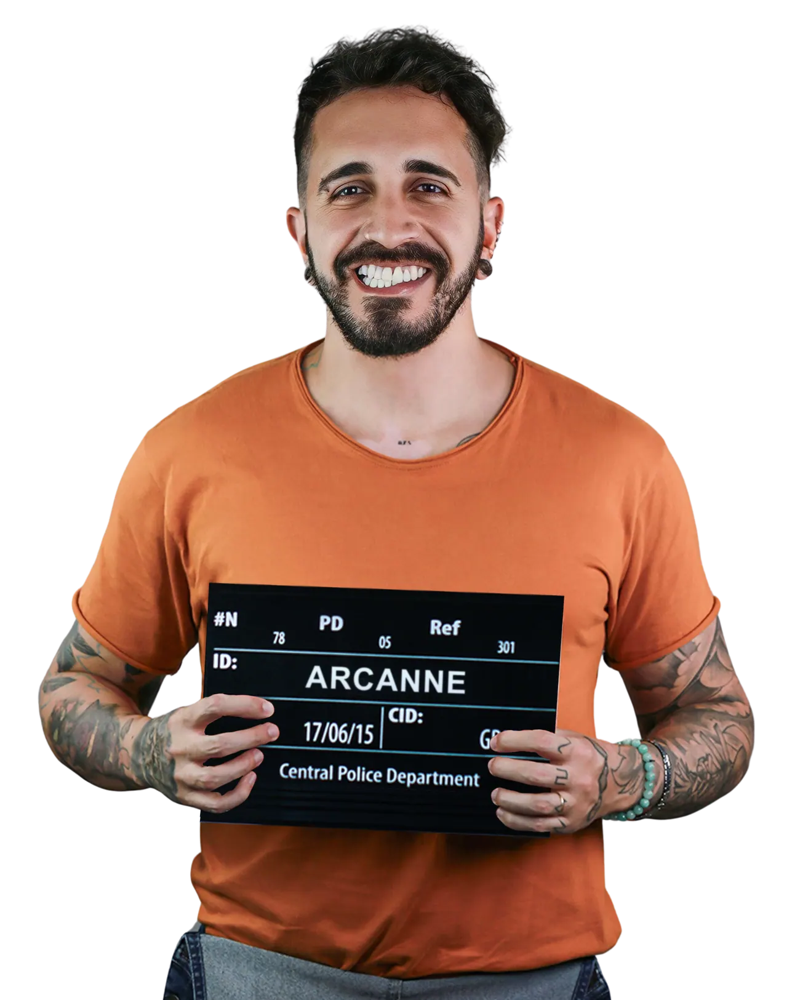
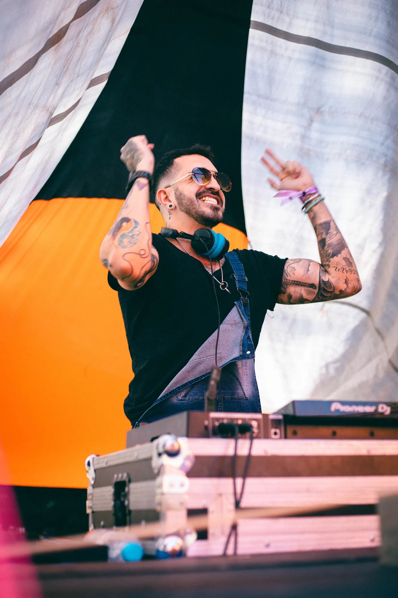
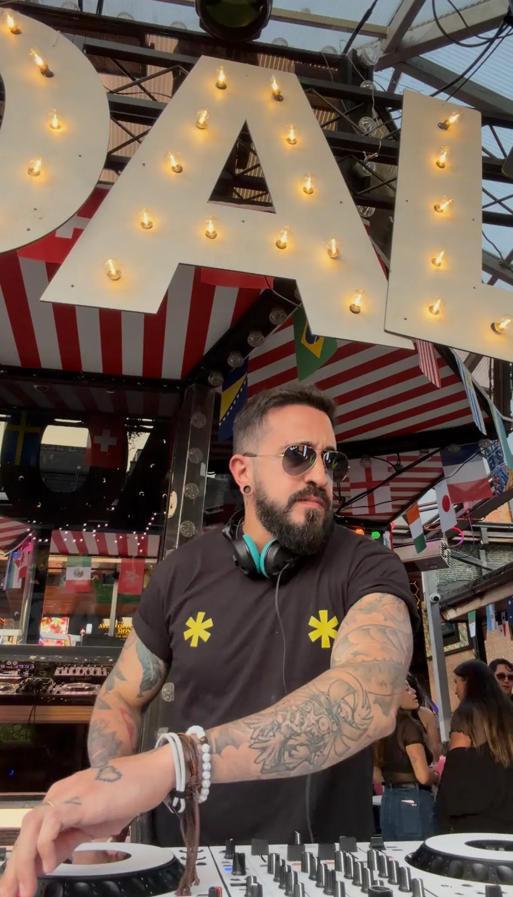
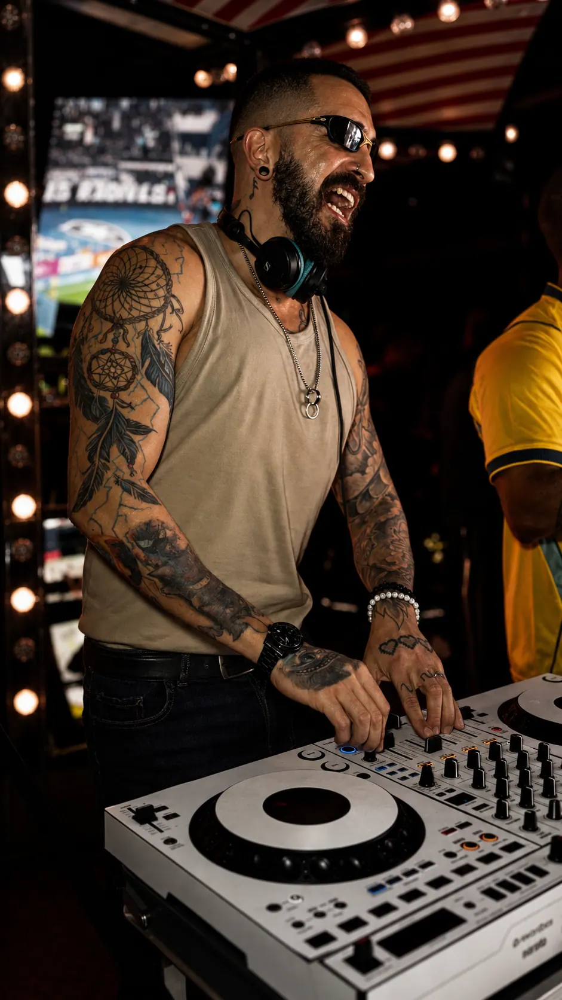

01 / 03
DJ e produtor · Rodolfo Carvalho
ARCANNE

Do psy-trance ao techno, com cultura pop no meio.

01 · Artista
Quem está por trás
Do psy-trance ao techno, de videogames a filmes clássicos.

- ID
- ARCANNE
- Nome
- Rodolfo Carvalho
- Origem
- Meio italiano, meio brasileiro
- Estrada
- Quase duas décadas como DJ e multi-instrumentista
- Solo desde
- 2020
- Som
- Psy-trance → techno
- Primeiro álbum
- Parallax · set. 2024
Rodolfo Carvalho é o nome por trás do Arcanne. Meio italiano e meio brasileiro, soma quase duas décadas como DJ e músico multi-instrumentista. Depois de fazer sucesso integrando projetos de destaque, conquistar milhares de fãs pelo Brasil e acumular milhões de reproduções nas plataformas digitais, decidiu, em 2020, encarar um novo desafio: a carreira solo.
Sem se prender a gêneros, suas produções transitam do psy-trance ao techno e incorporam elementos da cultura pop, de videogames a filmes clássicos. Ele é conhecido por faixas como “Paradise”, “Odin on Acid”, “Hey Ya Ho” e “Amsterdam”, além de remixes de sucesso de “Bloody Mary” (Lady Gaga), “Go F**k Yourself” (Two Feet) e “Pompeii” (Bastille). Com milhões de reproduções nas principais plataformas de streaming, suas faixas aparecem com frequência nos sets de grandes nomes da cena e já saíram por importantes gravadoras internacionais.
As apresentações, marcadas por técnicas criativas de mixagem, fundem sua sonoridade a elementos de outros gêneros, como EDM e rock. Essa abordagem levou o Arcanne a shows memoráveis ao redor do mundo, em eventos de grande porte como Universo Paralello (Pratigi, Brasil), Neelix & Friends (Bremen, Alemanha), Club A (São Paulo, Brasil), Techno Den (Dublin, Irlanda), Dicey’s Garden (Dublin, Irlanda) e Valldemossa Beach (Mallorca, Espanha).
Em 2024, idealizou e produziu seu primeiro álbum, “Parallax”, lançado em setembro daquele ano. O trabalho é um marco na trajetória: reúne faixas que contam uma história e percorrem os estilos explorados ao longo da carreira de produtor, juntando todas as influências que moldaram seu trabalho até hoje.



02 · Ao vivo
Na pista
Os sets juntam técnicas criativas de mixagem com elementos de EDM e rock. Três filmes, três pistas bem diferentes.
03 / 03
Rick's Experiment
Por onde passou
- 01Universo ParalelloPratigi · Brasil
- 02Neelix & FriendsBremen · Alemanha
- 03Club ASão Paulo · Brasil
- 04Techno DenDublin · Irlanda
- 05Dicey's GardenDublin · Irlanda
- 06Valldemossa BeachMallorca · Espanha
Eventos citados no release oficial.
03 · Música
No fone
Single · 11 abr. 2026
Odin on Acid
Faixa completa. O som só toca quando você aperta o play. · 140 BPM
Ouvir no Spotify(abre em nova aba)Trechos do press kit
Cortes de 30 segundos enviados pelo artista.
Também no Spotify
Hey Ya Ho (VIP Mix) · 2026
O player é do Spotify e só carrega se você pedir. open.spotify.com(abre em nova aba)
Álbum
Parallax
“Parallax”, o primeiro álbum, saiu em setembro de 2024: faixas que contam uma história e passam pelos estilos que ele explorou como produtor.
Discografia no Spotify
54 singles de 2020 a 2026, do mais novo ao mais antigo.
2026
2024
- Rock and Roll · Spotify (abre em nova aba)
- Taki Taki · Spotify (abre em nova aba)
- Destination Calabria (Arcanne Remix Stream Edit) · Spotify (abre em nova aba)
- Strangers (Stream Edit) · Spotify (abre em nova aba)
- KING · Spotify (abre em nova aba)
- Unstable · Spotify (abre em nova aba)
- Sex Style (Remake) · Spotify (abre em nova aba)
- One Night in Dublin · Spotify (abre em nova aba)
- High Doses of Swing · Spotify (abre em nova aba)
- Addicted · Spotify (abre em nova aba)
- Calma na Alma · Spotify (abre em nova aba)
2023
- Savoia · Spotify (abre em nova aba)
- Fliperama · Spotify (abre em nova aba)
- Fly to the Moon · Spotify (abre em nova aba)
- Deixa Ela (Arcanne '2.0' Remix) · Spotify (abre em nova aba)
- I'll Fly With You · Spotify (abre em nova aba)
- Agora · Spotify (abre em nova aba)
- RUN · Spotify (abre em nova aba)
- Bloody Mary (Arcanne Remix) · Spotify (abre em nova aba)
- #STAFM (Shake That Ass For Me) · Spotify (abre em nova aba)
- Pirate Ship · Spotify (abre em nova aba)
2022
- País do Carnaval · Spotify (abre em nova aba)
- Deuses a Dançar · Spotify (abre em nova aba)
- Underground · Spotify (abre em nova aba)
- Clube da Luta · Spotify (abre em nova aba)
- UNDR DA SUN · Spotify (abre em nova aba)
- Beat Oven · Spotify (abre em nova aba)
- Domino · Spotify (abre em nova aba)
- Fuel · Spotify (abre em nova aba)
- #BITCH · Spotify (abre em nova aba)
- Joker (Why So Serious?) · Spotify (abre em nova aba)
- Sucker Punch · Spotify (abre em nova aba)
- Yooo! · Spotify (abre em nova aba)
2021
- A Queda (Remix) · Spotify (abre em nova aba)
- Athena · Spotify (abre em nova aba)
- I Like to Move it · Spotify (abre em nova aba)
- Treme-Terra · Spotify (abre em nova aba)
- Tribute to Rick Sanchez (Remix) · Spotify (abre em nova aba)
- Pompeii (Remix) · Spotify (abre em nova aba)
- Mambo No. 5 (Arcanne 'Fm' Remix) · Spotify (abre em nova aba)
- Go Fuck Yourself · Spotify (abre em nova aba)
- Birds · Spotify (abre em nova aba)
- Eyes · Spotify (abre em nova aba)
- Born to be Wild · Spotify (abre em nova aba)
04 · Press kit
Para imprensa e produtores
Bio curta
Português
Arcanne é o projeto solo de Rodolfo Carvalho, DJ e produtor meio italiano, meio brasileiro, com quase duas décadas como DJ e multi-instrumentista. Suas produções vão do psy-trance ao techno, com cultura pop no meio, e seus shows já passaram por Universo Paralello, Neelix & Friends (Bremen) e Techno Den (Dublin). Em 2024 lançou o primeiro álbum, “Parallax”.
Inglês
Arcanne is the solo project of Rodolfo Carvalho, a half-Italian, half-Brazilian DJ and producer with almost two decades as a DJ and multi-instrumentalist. His music runs from psytrance to techno with pop culture in the mix, and he has played Universo Paralello, Neelix & Friends (Bremen) and Techno Den (Dublin). His debut album, “Parallax”, came out in 2024.
Bio completa
Português
Rodolfo Carvalho é o nome por trás do Arcanne. Meio italiano e meio brasileiro, soma quase duas décadas como DJ e músico multi-instrumentista. Depois de fazer sucesso integrando projetos de destaque, conquistar milhares de fãs pelo Brasil e acumular milhões de reproduções nas plataformas digitais, decidiu, em 2020, encarar um novo desafio: a carreira solo.
Sem se prender a gêneros, suas produções transitam do psy-trance ao techno e incorporam elementos da cultura pop, de videogames a filmes clássicos. Ele é conhecido por faixas como “Paradise”, “Odin on Acid”, “Hey Ya Ho” e “Amsterdam”, além de remixes de sucesso de “Bloody Mary” (Lady Gaga), “Go F**k Yourself” (Two Feet) e “Pompeii” (Bastille). Com milhões de reproduções nas principais plataformas de streaming, suas faixas aparecem com frequência nos sets de grandes nomes da cena e já saíram por importantes gravadoras internacionais.
As apresentações, marcadas por técnicas criativas de mixagem, fundem sua sonoridade a elementos de outros gêneros, como EDM e rock. Essa abordagem levou o Arcanne a shows memoráveis ao redor do mundo, em eventos de grande porte como Universo Paralello (Pratigi, Brasil), Neelix & Friends (Bremen, Alemanha), Club A (São Paulo, Brasil), Techno Den (Dublin, Irlanda), Dicey’s Garden (Dublin, Irlanda) e Valldemossa Beach (Mallorca, Espanha).
Em 2024, idealizou e produziu seu primeiro álbum, “Parallax”, lançado em setembro daquele ano. O trabalho é um marco na trajetória: reúne faixas que contam uma história e percorrem os estilos explorados ao longo da carreira de produtor, juntando todas as influências que moldaram seu trabalho até hoje.
Inglês
Rodolfo Carvalho is the name behind Arcanne. Half Italian, half Brazilian, he has spent almost two decades as a DJ and multi-instrumentalist. After success as part of high-profile projects, winning thousands of fans across Brazil and racking up millions of plays on digital platforms, he took on a new challenge in 2020: going solo.
Refusing to stick to one genre, his productions move from psytrance to techno and pull in pop culture, from video games to classic films. He is known for tracks such as “Paradise”, “Odin on Acid”, “Hey Ya Ho” and “Amsterdam”, and for hit remixes of “Bloody Mary” (Lady Gaga), “Go F**k Yourself” (Two Feet) and “Pompeii” (Bastille). With millions of streams on the major platforms, his tracks regularly turn up in sets by some of the scene’s biggest names and have been released on leading international labels.
His sets are built on creative mixing techniques, blending his sound with elements of other genres such as EDM and rock. That approach has taken Arcanne to memorable shows around the world, at large-scale events including Universo Paralello (Pratigi, Brazil), Neelix & Friends (Bremen, Germany), Club A (São Paulo, Brazil), Techno Den (Dublin, Ireland), Dicey’s Garden (Dublin, Ireland) and Valldemossa Beach (Mallorca, Spain).
In 2024 he conceived and produced his debut album, “Parallax”, released that September. A milestone in his career, it brings together tracks that tell a story and travel through the styles he has explored as a producer, uniting every influence that has shaped his work to date.
Fotos oficiais
As fotos de estúdio vêm recortadas, em PNG com fundo transparente.


Logos
PNG com fundo transparente, em preto e em branco.


05 · Booking
Leve o Arcanne para a sua pista
Festivais, clubes e festas. A conversa começa direto com o artista.
Ele também dá aulas de DJ e produção e trabalha como ghost producer.